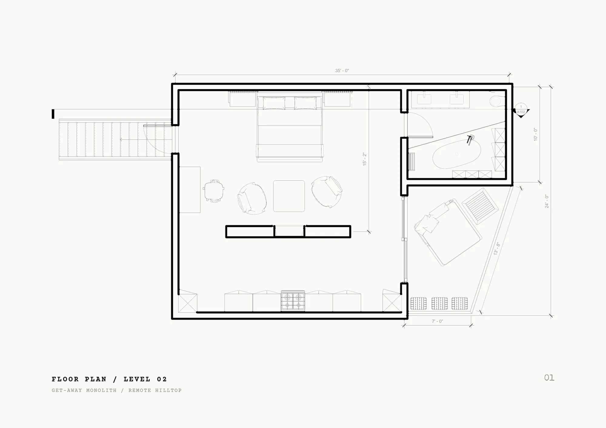
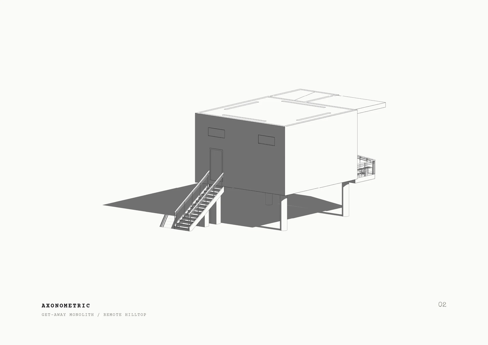
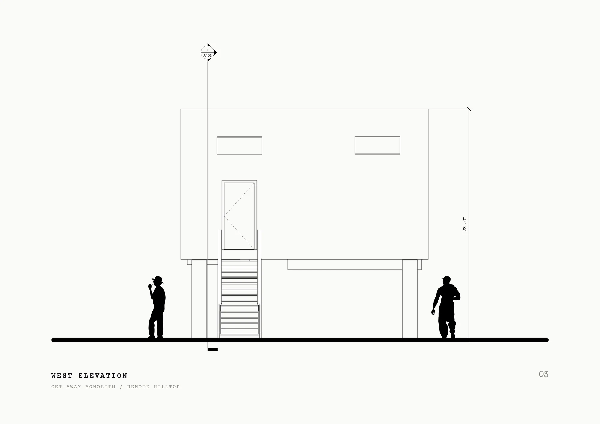
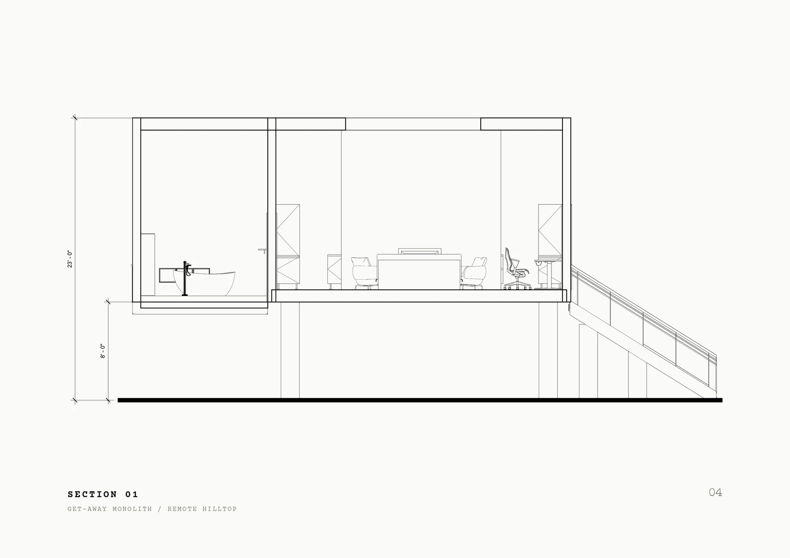
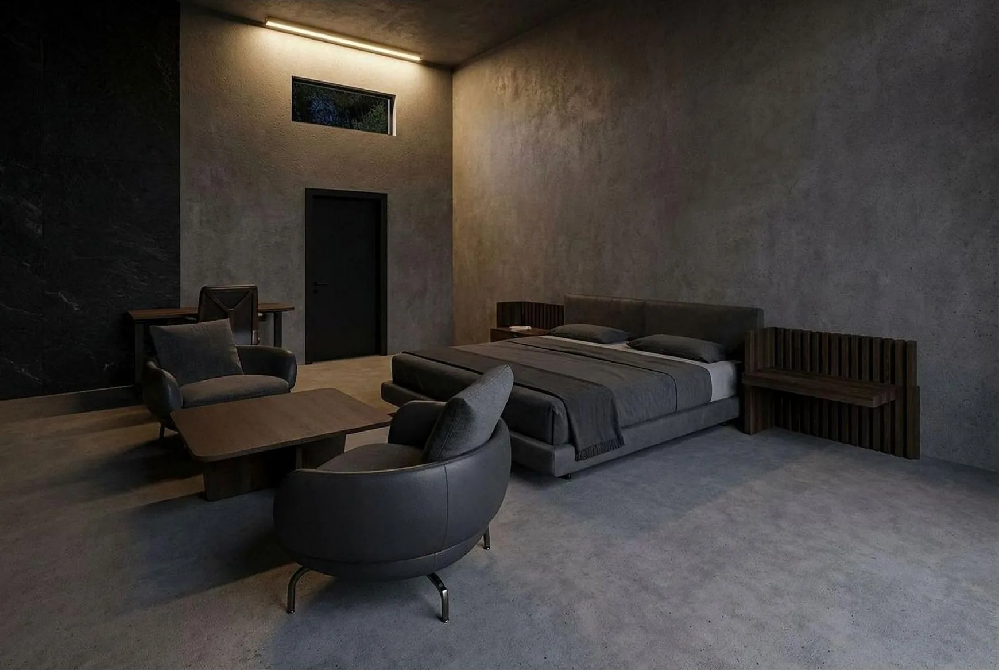
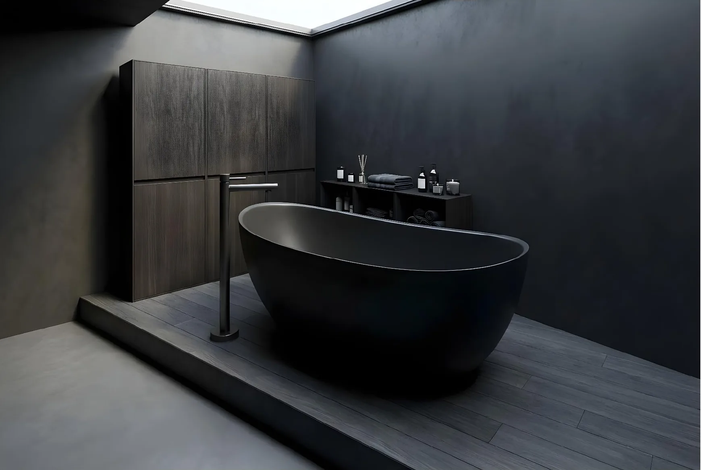

003 / Project
Get-away Monolith
An experimental architecture/interior design project based on location and privacy. The house is set in a remote location to serve as a get-away for a weekend or vacation. Designed with a black obsidian color design, the house is a destimulator in a fast moving world, allowing the occupant to slow down in luxury while enjoying nature around them.
Drawings
4 plates



Renders
Visualisation

Model
Interactive
Drag to orbit · scroll to zoom